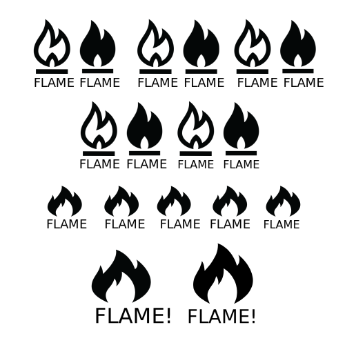
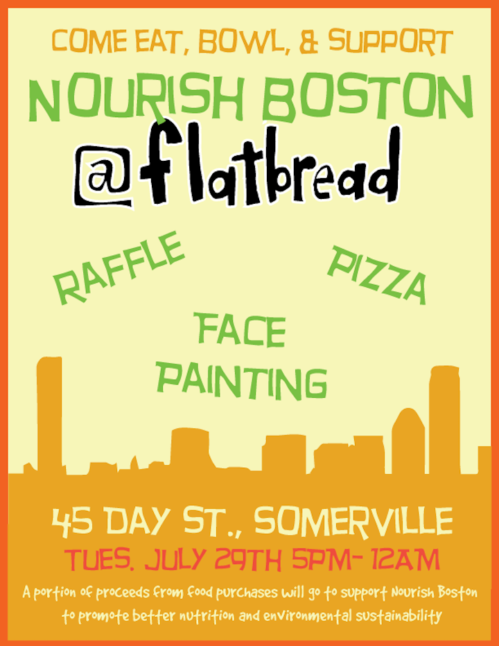
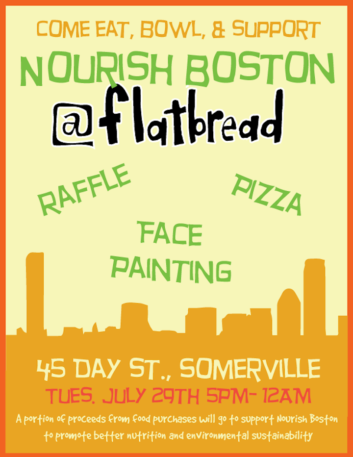

A collection of various logos and content created for organizations whose missions I am personally aligned with.
A collection of various logos and content created for organizations whose missions I am personally aligned with.
FanMailis a geeky subscription box that caters toward a more femme audience. I am a regular contributor for their design efforts and was recently asked to build out a calendar for their December box. It was a great opportunity to flex my type and lettering skills, and I plan on taking some of the stuff I made and actually creating fonts out of them!.
Love Your Rebellion is a feminist online magazine whose goal is to empower marginalized populations through social education, community service, and art benefaction. I became involved with them when I found myself with a lack of graphic design projects, so I reached out to ask if they needed any help after reading some of their articles online. This flyer was completely drawn digitally using PhotoShop, and edited in Illustrator. I'm quite fond of the lettering in the title.
See the final use for the image here!
FLAME! is a small, local LGBTQ arts zine that is run by Michael Prometheus Fury. Michael has featured me in a zine in the past, so when he asked for some help designing a logo, I was very happy to oblige. The logo was created in under an hour as Michael was tight on time. Fortunately, he was was very clear in what type of feel he was looking for, but was just not sure on what was the best way to make it. We created the logo through a series of short sprints:
Food Tank spotlights environmentally, socially, and economically sustainable ways of alleviating hunger, obesity, and poverty and create networks of people, organizations, and content to push for food system change on many social platforms. Much of my work in Food Think Tank was to create shareable content for their social media audience.
When I joined Nourish Boston as a graphic designer in 2013, I found that there has been a lack of a branding effort as current resources were instead focused on securing funding and getting involved in community efforts. It was difficult to nail down what kind of feel Nourish was looking for as they were a very new organization, so my first efforts in creating collateral were rushed.
 

As my role transitioned to Associate Director, I was working more within Dorchester's and Boston's food communities, I was able to narrow down a few designs that out community leaders preferred to see: